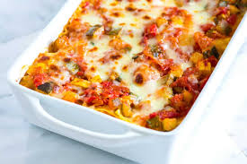

Veggie Lasagne
Source Link

Description
An easy vegetable lasagne using just a few ingredients.
You can use ready-made tomato sauce and white sauce, or
batch cook the sauces and freeze them
Ingredients
- Three red peppers
- Two aubergines
- Eight tbsp olive oil, plus extra for the dish
- 300g lasagne sheets
- 125g mozzarella
- Handful cherry tomatoes
Steps
- Chop-chop! Cut the peppers into large chunks,
chop the aubergines into 0.5cm thick slices, halve
cherry tomatoes
- Heat your oven to 200C/180C fan/gas 6. Lightly
oil two large baking trays and add the peppers and
aubergines. Toss with the olive oil, season well,
then roast for 25 mins until lightly browned
- Reduce the oven to 180C/160C fan/gas 4. Lightly
oil a 30x20cm ovenproof dish. Arrange a layer of
the vegetables on the bottom, then pour oven a third
of the tomato sauce. Top with a layer of lasagne sheets,
then drizzle over a quarter of the white sauce. Repeat
until you have three layers of pasta.
- Spoon the remaining white sauce over the pasta,
making sure the whole surface is covered, then scatter
over the mozzarella and cherry tomatoes. Bake for 45
mins until bubbling and golden.